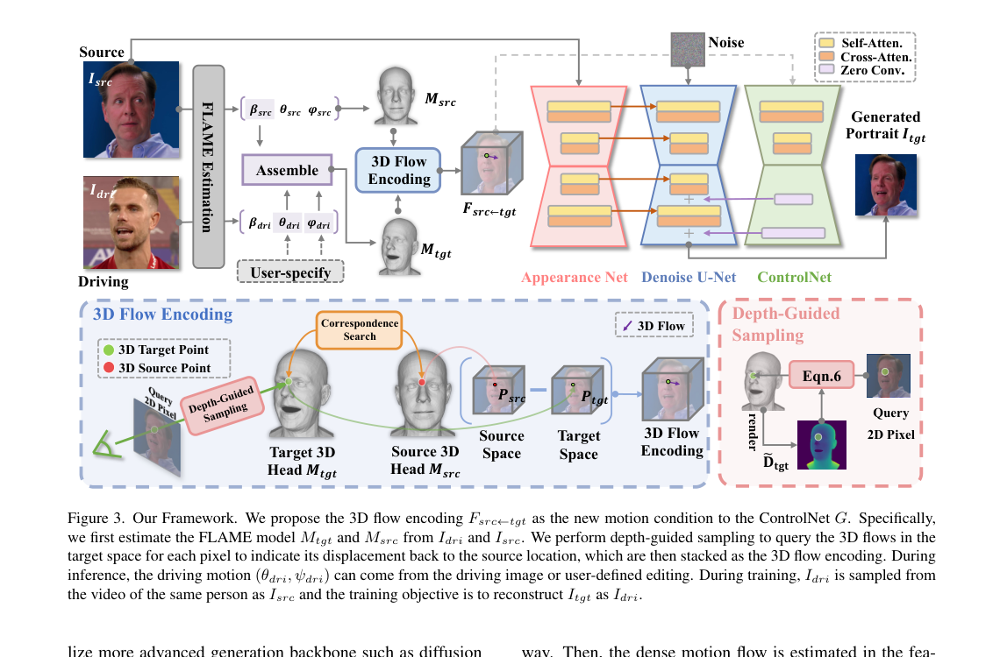
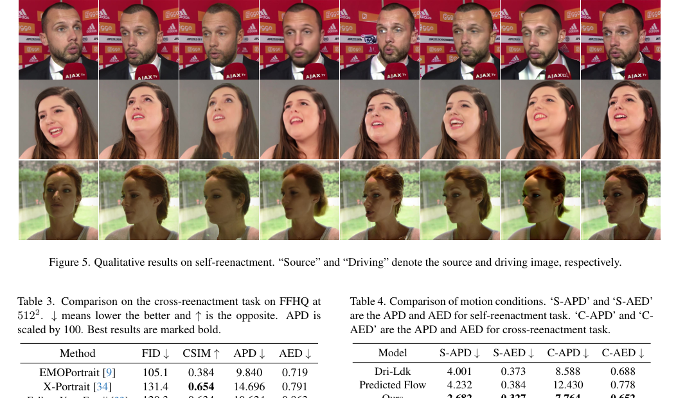
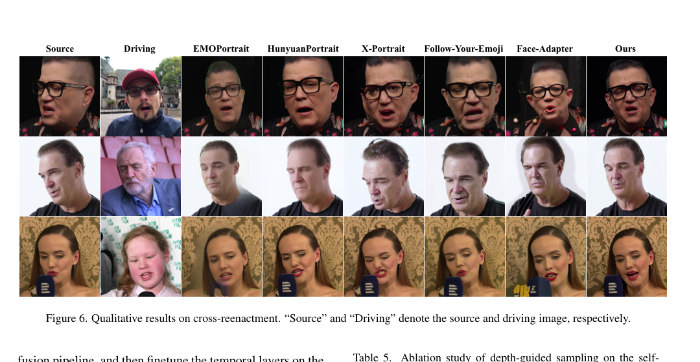
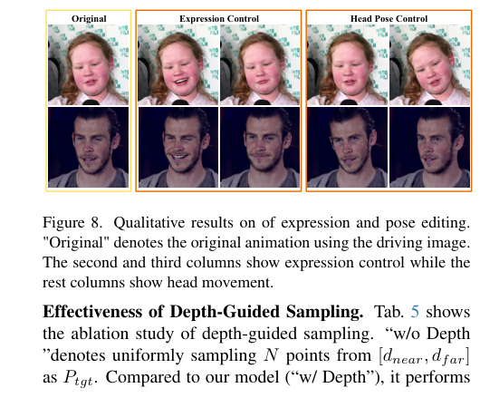

<!DOCTYPE html>
<html lang="en">
<head>
  <meta charset="UTF-8" />
  <meta name="viewport" content="width=device-width, initial-scale=1.0" />
  <title>FG-Portrait: 3D Flow Guided Editable Portrait Animation</title>
  <link rel="preconnect" href="https://fonts.googleapis.com">
  <link rel="preconnect" href="https://fonts.gstatic.com" crossorigin>
  <link href="https://fonts.googleapis.com/css2?family=Inter:wght@400;500;600;700;800&display=swap" rel="stylesheet">
  <link rel="stylesheet" href="style.css" />
</head>
<body>
  <header class="hero">
    <div class="container">
      <p class="eyebrow">Project Page</p>
      <h1>FG-Portrait: 3D Flow Guided Editable Portrait Animation</h1>
      <p class="subtitle">Learning-free 3D motion correspondence for controllable portrait animation.</p>

      <div class="authors">
        <span>Yating Xu<sup>1</sup></span>
        <span>Yunqi Miao<sup>2</sup></span>
        <span>Evangelos Ververas<sup>3</sup></span>
        <span>Jiankang Deng<sup>3</sup></span>
        <span>Jifei Song<sup>4</sup></span>
      </div>

      <p class="affiliations">
        <span><sup>1</sup>National University of Singapore</span>
        <span><sup>2</sup>University of Warwick</span>
        <span><sup>3</sup>Imperial College London</span>
        <span><sup>4</sup>University of Surrey</span>
      </p>

      <div class="button-row">
        <a class="btn primary" href="#abstract">Abstract</a>
        <a class="btn" href="#method">Framework</a>
        <a class="btn" href="#results">Results</a>
        <a class="btn" href="#bibtex">BibTeX</a>
      </div>
    </div>
  </header>

  <main>
    <section class="section teaser">
      <div class="container">
        <embed src="assets/teaser.pdf" type="application/pdf" width="100%" height="500px">
        <p class="caption">
          Given a source and driving portrait, FG-Portrait synthesizes a target image that preserves source identity while following the driving pose and expression. It also supports user-controlled pose and expression editing.
        </p>
      </div>
    </section>

    <section id="abstract" class="section">
      <div class="container narrow">
        <h2>Abstract</h2>
        <p>
          Motion transfer from the driving to the source portrait remains a key challenge in the portrait animation. Current diffusion-based approaches condition only on the driving motion, which fails to capture source-to-driving correspondences and consequently yields suboptimal motion transfer. Although flow estimation provides an alternative, predicting dense correspondences from 2D input is ill-posed and often yields inaccurate animation. We address this problem by introducing <strong>3D flows</strong>, a learning-free and geometry-driven motion correspondence directly computed from parametric 3D head models. To integrate this 3D prior into diffusion model, we introduce <strong>3D flow encoding</strong> to query potential
       3D flows for each target pixel to indicate its displacement back to the source location. To obtain 3D flows aligned with 2D motion changes, we further propose <strong>depth-guided sampling</strong> to accurately locate the corresponding 3D points for each pixel. Beyond high-fidelity portrait animation, our model further supports <strong>user-specified editing</strong> of facial expression and head pose. Extensive experiments demonstrat the superiority of our method on consistent driving motion transfer as well as faithful source identity preservation.
        </p>
      </div>
    </section>

    <section id="method" class="section alt">
      <div class="container">
        <h2>Framework</h2>
        <p class="lead">
          Our framework introduces <strong>3D Flow Encoding</strong> as a new motion condition for diffusion-based portrait animation.
        </p>

        <div class="grid two">
          <div class="card">
            <h3>Core pipeline</h3>
            <ol class="steps">
              <li>Estimate FLAME 3D head models from the source and driving portraits.</li>
              <li>Assemble a target head using source identity and driving motion.</li>
              <li>Compute dense 3D flows from target-space points back to source-space correspondences.</li>
              <li>Use depth-guided sampling to query pixel-aligned 3D motion cues.</li>
              <li>Feed the resulting 3D flow encoding into ControlNet for portrait generation.</li>
            </ol>
          </div>

          <div class="card">
            <h3>Why it helps</h3>
            <ul class="bullets">
              <li>Explicit geometry-aware correspondence instead of ambiguous 2D-only motion cues.</li>
              <li>Learning-free motion prior computed from aligned 3D head models.</li>
              <li>More robust under large pose variation and cross-identity reenactment.</li>
              <li>Naturally supports controllable expression and head pose editing.</li>
            </ul>
          </div>
        </div>

        
        <p class="caption">
          Overview of FG-Portrait. The model estimates source and driving 3D heads, constructs the target head, computes 3D flows, performs depth-guided sampling, and uses the resulting 3D flow encoding as motion guidance for diffusion-based generation.
        </p>
      </div>
    </section>

    <section id="results" class="section">
      <div class="container">
        <h2>Results</h2>
        <p class="lead">
          FG-Portrait delivers more accurate motion transfer and strong identity preservation across self-reenactment and cross-reenactment settings.
        </p>

        <div class="grid two">
          <div>
            <h3>Self-reenactment</h3>
            
          </div>
          <div>
            <h3>Cross-reenactment</h3>
            
          </div>
        </div>
      </div>
    </section>

    <section class="section alt">
      <div class="container">
        <h2>User-controllable Editing</h2>
        <div class="grid two editing-layout">
          <div class="card">
            <h3>Editable controls</h3>
            <p>
              Because motion is represented through a parametric 3D head model, FG-Portrait supports feed-forward editing during inference.
            </p>
            <ul class="bullets">
              <li>Expression control</li>
              <li>Head pose control</li>
              <li>Continuous adjustment through user-specified parameters</li>
            </ul>
          </div>
          <div>
            
          </div>
        </div>
      </div>
    </section>

    <section class="section">
      <div class="container narrow">
        <h2>Highlights</h2>
        <div class="grid three">
          <div class="card small">
            <h3>3D Flow</h3>
            <p>Learning-free, geometry-aware motion correspondence computed from aligned 3D head models.</p>
          </div>
          <div class="card small">
            <h3>Depth-Guided Sampling</h3>
            <p>Improves alignment between queried 3D motion and observed 2D image changes.</p>
          </div>
          <div class="card small">
            <h3>Editable Animation</h3>
            <p>Supports controllable pose and expression editing without retraining.</p>
          </div>
        </div>
      </div>
    </section>

    <section id="bibtex" class="section alt">
      <div class="container narrow">
        <h2>BibTeX</h2>
<pre><code>@article{xu2025fgportrait,
  title   = {FG-Portrait: 3D Flow Guided Editable Portrait Animation},
  author  = {Xu, Yating and Miao, Yunqi and Ververas, Evangelos and Deng, Jiankang and Song, Jifei},
  journal = {arXiv preprint arXiv:XXXX.XXXXX},
  year    = {2025}
}</code></pre>
        <p class="note">Replace the arXiv identifier with the final one when available.</p>
      </div>
    </section>
  </main>

  <footer class="footer">
    <div class="container">
      <p>Built as a clean academic project page template for FG-Portrait.</p>
    </div>
  </footer>
</body>
</html>
